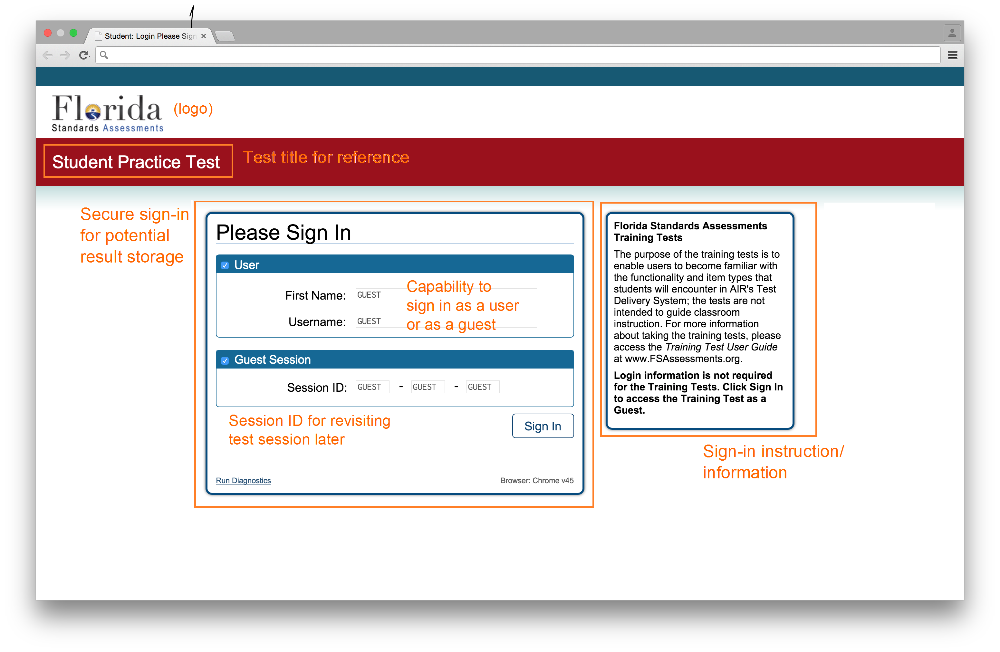

Signing In
How to sign in and begin taking the test.
Once you have chosen that you would like to take a test, you will be prompted to sign in. There are two very different options available for signing in, as a user or as a guest, both of which are discussed here. In general, signing in as a guest is faster, but provides fewer features than signing in as a user.

_
User Sign In
If you have never signed in as a user before, you must first choose to create a new account. This will allow you to choose a username and password so that you may sign in with them in the future.
If you have already created a username and password, then you can sign in by entering them.
Signing in as a user comes with a number of advantages, as it will allow this website to remember what you have done on it thus far. You will be able to review past exams, and see which practice exams you have already taken, among other things.
Guest Sign In
If you do not need to have this site remember your work on past exams or would just like to sign in quickly, you can sign in as a guest. To do this, please select "Guest Sign In," and you will be able to take exams without creating an account.